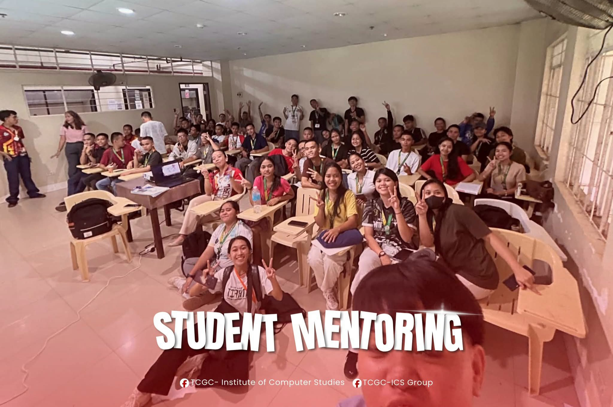

Technology connects us, informs us, and gives us opportunities to learn. But with these opportunities comes the responsibility to use it wisely, respectfully, and ethically.
Explore Digital Ethics ↓Digital ethics refers to the values and principles that guide our behavior when using technology and the internet. It reminds us to think before we click, post, share, or comment.
Sometimes, making a difference starts with sharing what we know and helping others learn.

Being part of a student mentoring activity gave me an opportunity to experience the importance of helping and supporting others. It reminded me that learning is not only about gaining knowledge for ourselves but also about sharing what we know with others. Through mentoring, students can encourage one another, exchange ideas, and learn together in a supportive environment.
This experience taught me that even simple acts of guidance, patience, and encouragement can make a difference in someone's learning journey. It also reflects the value of compassion because helping others grow is one way of showing kindness and making a positive contribution to the community.
Small responsible actions can make the internet a safer and more positive place for everyone.
Keep personal information safe. Avoid sharing passwords, home addresses, and other private details online.
Treat others with kindness. Avoid cyberbullying, offensive comments, and hurtful messages.
Check whether information is true before sharing it. Do not spread fake news, rumors, or misleading content.
Remember that your online actions leave traces. Share content that reflects good character and responsibility.
Give proper credit to original creators. Use digital resources and AI tools responsibly in your studies.
Use technology with purpose. Make time for rest, hobbies, relationships, and activities outside the screen.
Every post, comment, and message can affect someone. Before doing anything online, ask yourself:
Being responsible online begins with the choices we make every day.
As digital citizens, we have the power to make the online world more helpful, safe, and meaningful. Let our actions reflect kindness, honesty, and responsibility.
"Let your light shine before others." — Matthew 5:16
Faith & Technology →